Lesson 2: Understanding Policy Learning
From Point Estimates to Probability Distributions
Prefer to listen? Experience this lesson as an immersive classroom audio.
🎧 Listen to Audio Version →In this lesson, we discover why predicting a single action fails for robots, and how thinking in probability distributions unlocks the power of modern robot learning.
Chapter 1: The Multimodal Problem
Dr. Nova, I’ve been thinking about what we learned in Lesson 1. We said imitation learning is the practical path forward - collect demonstrations, train a neural network, deploy on the robot. But I tried implementing a simple policy that predicts actions from observations, and something weird happened.
Ah, you’ve discovered the multimodal problem! Tell me what happened.
I collected 50 demonstrations of reaching around an obstacle. Sometimes I went left, sometimes I went right - both worked fine. But when I trained the network and deployed it… the robot went straight INTO the obstacle!
laughs That’s the classic point estimate policy failure. Let me show you exactly why this happens.
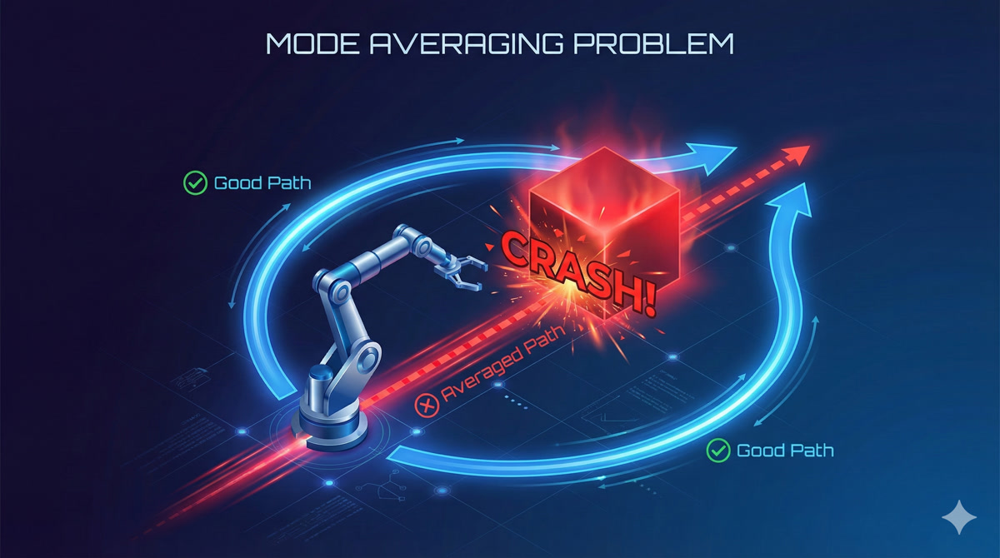
When your network outputs a single action - what we call a point estimate - it’s essentially computing the average of all the actions it saw in training. For that obstacle scenario, half your demos went left, half went right. The average? Straight ahead. Directly into the obstacle.
A point estimate policy outputs a single “best” action. But when expert behavior is multimodal (multiple valid solutions), averaging produces an action that may not match ANY of the valid modes - often the worst possible choice.
So the problem isn’t the neural network or the training process - it’s the fundamental assumption that there’s one “correct” action?
Exactly! Let me give you another example. Imagine your SO-ARM101 bimanual setup folding a shirt. Sometimes you demonstrate folding the left side first, sometimes the right side first. Both are valid. But a point estimate policy might try to fold BOTH sides simultaneously - tangling the fabric because it’s averaging over incompatible strategies.
The solution? Stop predicting THE action. Start predicting the DISTRIBUTION of possible actions.
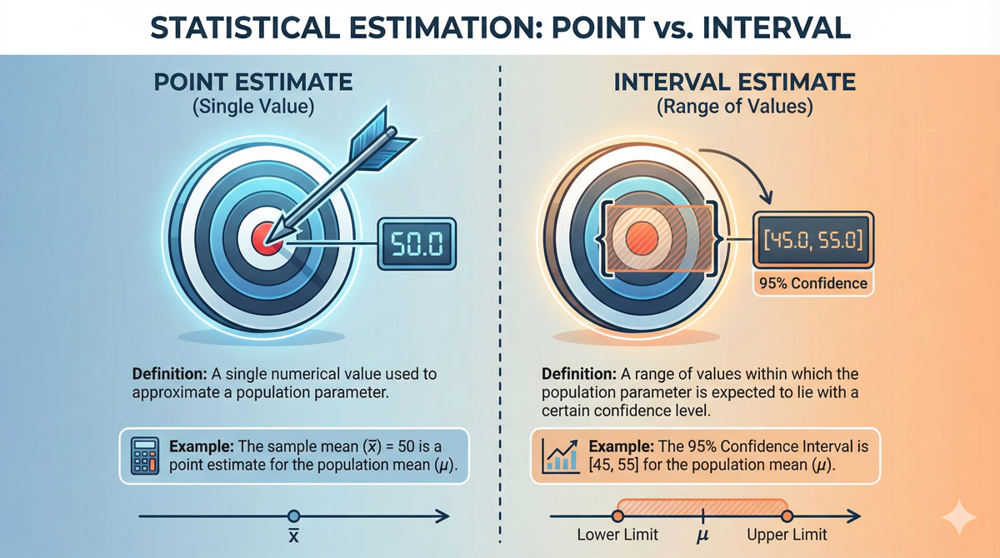
That’s a huge shift in thinking! Instead of asking “what action should I take?”, we’re asking “what are ALL the actions I could take, and how likely is each one?”
You’ve got it. And this shift from point estimates to distributions is exactly what deep generative modeling gives us. It’s the key technology that makes modern robot policies like ACT (Action Chunking with Transformers) actually work.
Chapter 2: Thinking in Distributions
Okay, I understand WHY we need distributions. But how do we actually work with them? A probability distribution seems so… abstract.
Let’s build your intuition from something familiar. Imagine I measure the heights of 100 students in a classroom and plot them on a histogram.
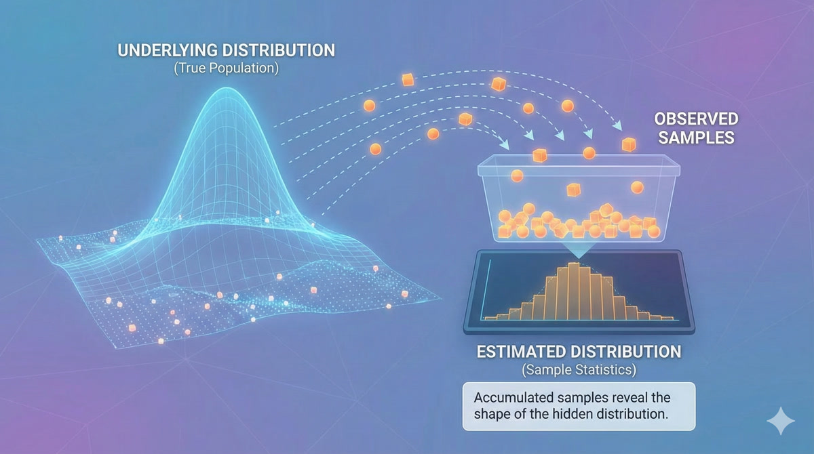
What you’ll see is that most students cluster around the average height, with fewer at the extremes. That histogram approximates a probability distribution - specifically, a Gaussian or “bell curve.”
So the distribution tells us: “If I pick a random student, what’s the probability they’re between 5’6” and 5’8”?”
Precisely! Now here’s the key insight: we can think about almost ANYTHING as having an underlying probability distribution. Images. Text. Robot trajectories.
Consider all possible images of cats. There’s some incredibly complex, high-dimensional distribution over “valid cat images.” Most random pixel arrangements are NOT cats - they have zero probability under this distribution. But actual cat photos have high probability.
Deep Generative Modeling uses neural networks to learn probability distributions from data. Given training samples, we learn P_theta (a parameterized distribution) that approximates the true data distribution P_data. We can then sample from P_theta to generate new, valid data.
So for robot learning, we want to learn the distribution of “valid expert trajectories”?
Exactly! And more specifically, we want to learn P(actions | observations) - given what the robot currently sees, what’s the distribution of appropriate actions?
The challenge is that this distribution can be incredibly complex - high-dimensional, multimodal, with intricate dependencies between timesteps. That’s where deep generative models come in. They use neural networks to represent these complex distributions in tractable ways.
Chapter 3: KL Divergence Demystified
Okay, so we’re trying to learn P_theta that matches P_data. But how do we measure if two distributions are “close” to each other? It’s not like we can just subtract them.
Great question! The standard tool for this is KL Divergence - it measures how different two probability distributions are.
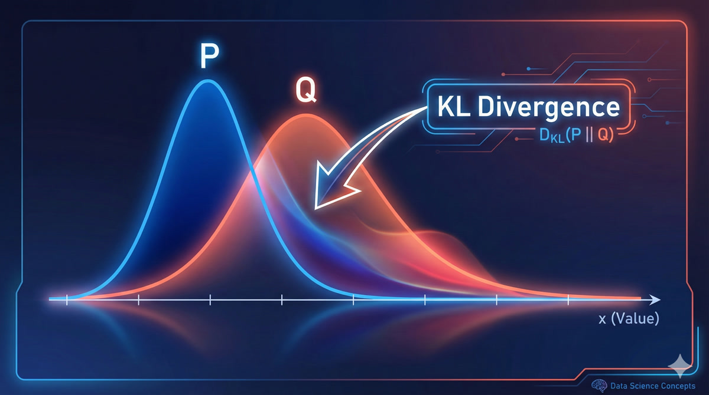
The formal definition is:
\[KL(P || Q) = \sum P(x) \cdot \log\frac{P(x)}{Q(x)}\]
But the intuition is more important than the math.
What’s the intuition?
Think of it as the “surprise” you’d experience if you assumed Q was true, but data actually came from P.
If Q assigns low probability to something P says is common, you’d be very surprised when it happens - that’s a high KL divergence. If Q and P agree on what’s likely and unlikely, minimal surprise - low KL divergence.
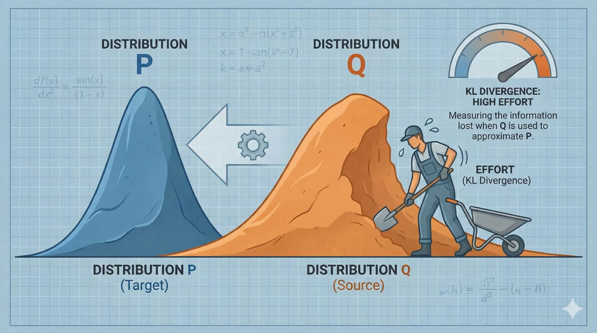
- Always non-negative: KL(P||Q) ≥ 0
- Zero only when identical: KL(P||Q) = 0 ⟺ P = Q
- Asymmetric: KL(P||Q) ≠ KL(Q||P) in general
- Not a true distance: Doesn’t satisfy triangle inequality
So when we train a deep generative model, we’re essentially minimizing the KL divergence between our learned distribution and the true data distribution?
That’s the ideal, yes. In practice, we can’t compute the true data distribution P_data directly - we only have samples from it. But clever training objectives (like the ELBO we’ll discuss later) let us minimize KL divergence indirectly.
This is crucial for understanding VAEs: the regularization term in their loss function IS a KL divergence - specifically, forcing the learned latent distribution to be close to a standard Gaussian.
Chapter 4: The Secret Recipe (Latent Variables)
Before we dive into VAEs specifically, can you explain this concept of “latent variables” I keep seeing? What are they?
Let me explain with a thought experiment. Imagine you collect handwriting samples from 100 students - everyone writes the word “hello.” Each sample looks different. Now, here’s the question: what hidden factors determine each person’s handwriting style?
Hmm… maybe how much pressure they apply, whether they slant left or right, how fast they write, how neat they are?
Exactly! These hidden factors - pressure, slant, speed, neatness - are not directly visible in the final image. But they CAUSE the differences we observe. In machine learning, we call these latent variables.
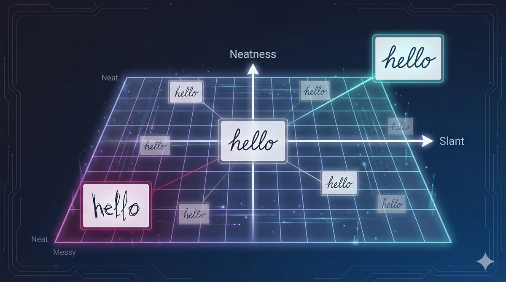
So every handwriting sample can be described by a “secret recipe” of these hidden factors?
I love that analogy! Yes, think of it like a machine with hidden knobs:

If I know Rohan writes with: - Slant: slightly right - Pressure: medium - Speed: fast - Neatness: low
Then I can uniquely identify his handwriting style. These knob settings ARE the latent variables.
Latent variables are low-dimensional hidden factors that explain the variation in high-dimensional data. They’re not directly observed but are inferred during training. The decoder can generate data from any point in latent space.
And for robotics, the latent variables would capture things like… folding style? Speed preference? Which arm moves first?
Precisely! For your SO-ARM101 folding task, the latent space might encode: - Overall movement speed - Grip force preference - Left-first vs right-first tendency - Precision vs speed tradeoff
Different demonstrations from different people would map to different regions of this latent space. And crucially - you can SAMPLE from this space to generate new, valid trajectories with different styles!
Chapter 5: The Encoder - Compressing Reality
Okay, so latent variables are the “secret recipe.” But how do we find them? Given a handwriting sample, how do we know its slant and neatness values?
That’s the job of the encoder! The encoder is a neural network that takes high-dimensional data (like a 28×28 pixel image = 784 dimensions) and compresses it down to the latent representation.
Wait, 784 dimensions down to 2? That’s an insane compression ratio!
It is! And that’s exactly the point. The encoder learns to extract only the ESSENTIAL information - the factors that actually matter for reconstruction. All the redundancy, all the noise, gets thrown away.
For MNIST digits, you can capture the essential identity of a digit in just 2-10 dimensions. For robot trajectories (12 joints × 100 timesteps = 1200 dimensions), you might use 64 or 128 latent dimensions.
- Input: 784 pixels (28×28 flattened image)
- Hidden layer: 400 neurons with ReLU
- Output: 4 values (2 for mean μ, 2 for variance σ)
- Compression: 784 → 400 → 4
Hold on - you said the encoder outputs mean AND variance? Not just a point in latent space?
Ah, you’ve noticed the crucial detail! This is what makes it a Variational Autoencoder. The encoder doesn’t output a single point - it outputs a DISTRIBUTION.
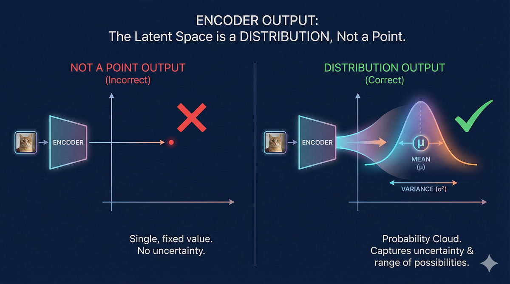
It says: “This image probably came from somewhere in THIS REGION of latent space” - not “it came from exactly THIS point.”
But why? What’s wrong with just outputting a point?
If every image maps to a single point, you get GAPS in your latent space. If you try to sample from those gaps, you get garbage - the decoder doesn’t know what to do with latent values it’s never seen.
But if images map to overlapping distributions (fuzzy blobs), the entire space gets “covered.” Every point in latent space is near something meaningful, so sampling works everywhere. That’s the magic of VAEs!
Chapter 6: The Decoder - Reconstructing the World
So the encoder compresses data into a latent distribution. What about the decoder?
The decoder does the reverse! It takes a point from latent space and reconstructs the original data.
For MNIST, the decoder architecture might be: - Input: 2 latent dimensions (sampled from encoder’s distribution) - Hidden layer: 400 neurons - Output: 784 pixel values (reconstructed image)
So if I move around in latent space, the decoder output changes smoothly?
Exactly! Watch what happens as we traverse the latent space:
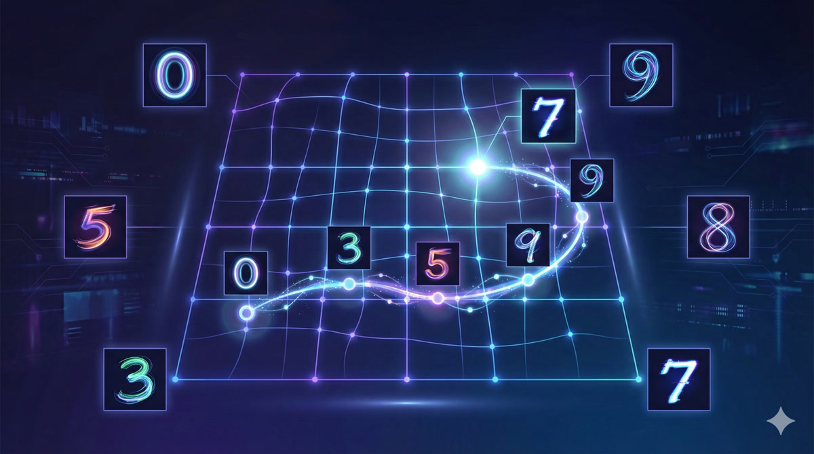
This is called latent space interpolation. You can smoothly morph between a “3” and an “8”, or between fast-writing and slow-writing styles. The transitions are continuous, not abrupt.
The decoder is really a generative model: given any point z in latent space, it produces a data sample. Combined with the prior P(z), this gives us P(x) = ∫ P(x|z)P(z)dz - a full generative model over data!
So to generate new handwriting, I just sample a random z from a Gaussian and decode it?
That’s the idea! And this is incredibly powerful for robotics. Once you’ve trained the VAE on expert demonstrations, you can:
- Sample a latent code z (representing a “style” or “intent”)
- Decode it to get a complete trajectory
- Execute on SO-ARM101
Each sample gives you a different, but valid, way to accomplish the task.
Chapter 7: Why “Variational”? The Distribution Trick
You’ve mentioned the “variational” part several times. What exactly makes a VAE different from a regular autoencoder?
Great question! Let me show you the problem with regular autoencoders:
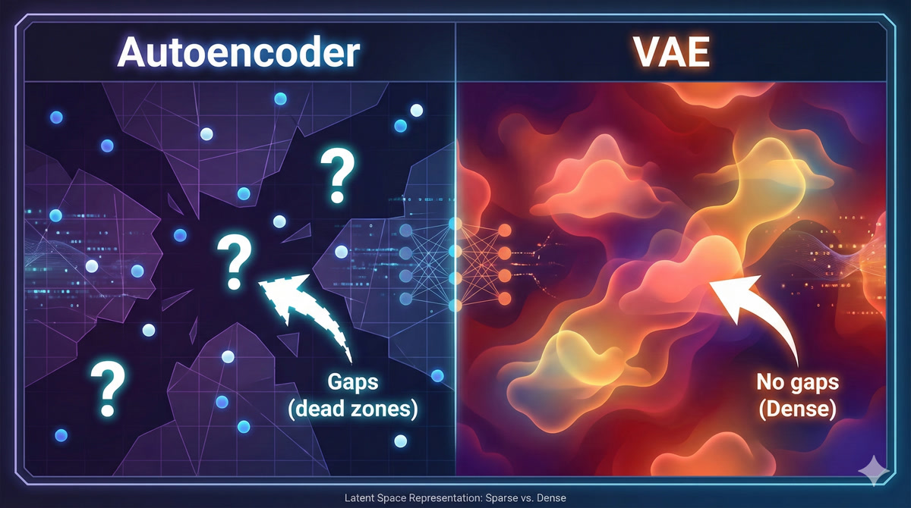
A plain autoencoder maps each input to a specific point in latent space. This creates GAPS - regions with no training data. If you try to decode from a gap, you get nonsense.
Because the decoder never saw those latent values during training?
Exactly! Now here’s the VAE insight: instead of mapping to points, map to distributions (fuzzy blobs). Make these distributions overlap.
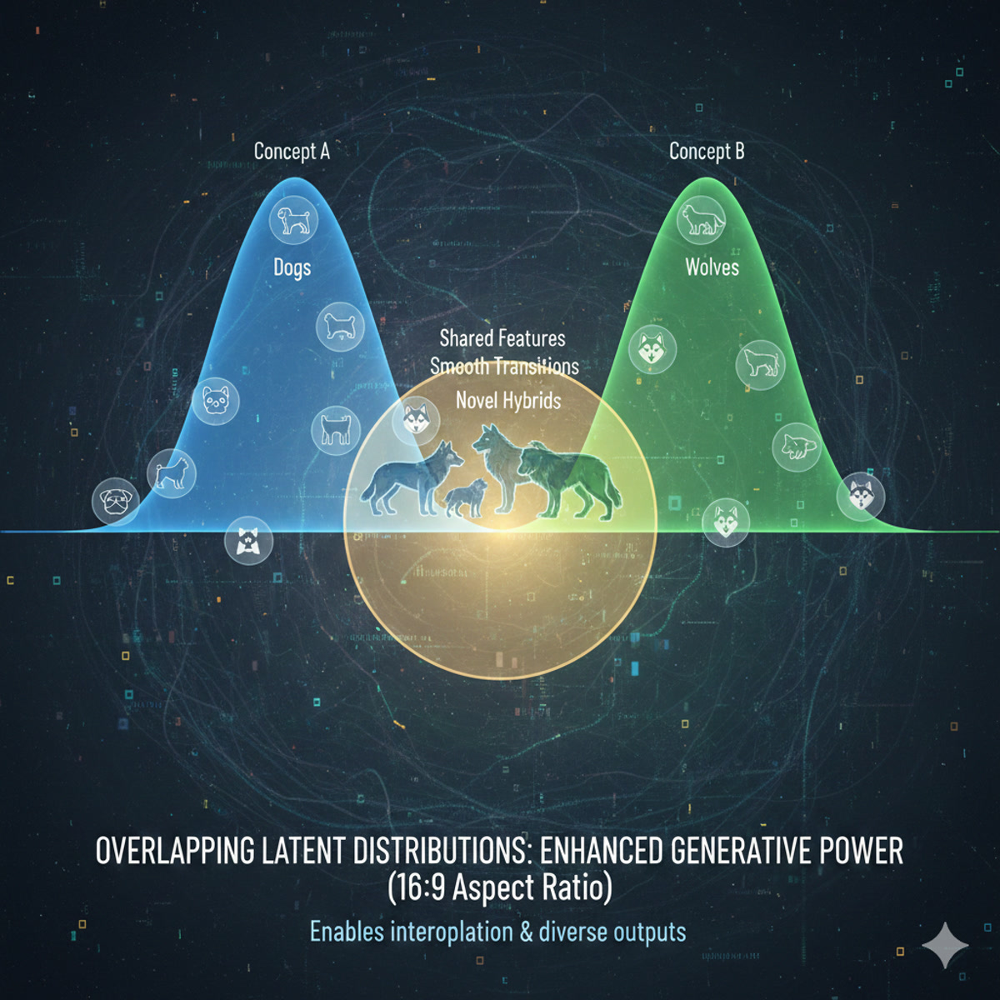
Now the entire latent space is “covered.” Any point you sample is near training data from multiple inputs. The decoder can interpolate sensibly.
| Aspect | Plain Autoencoder | VAE |
|---|---|---|
| Encoder output | Single point z | Distribution (μ, σ) |
| Latent space | Sparse, gaps | Dense, overlapping |
| Generation | Poor (gaps produce garbage) | Good (everywhere meaningful) |
| Loss function | Reconstruction only | Reconstruction + KL regularization |
And the “variational” name comes from…?
From variational inference - a technique in Bayesian statistics for approximating intractable probability distributions. The VAE’s training objective (ELBO) comes from variational inference theory.
But for practical purposes, just remember: “variational” means we output distributions instead of points, and we regularize those distributions to be nice Gaussians. This is what enables generation!
Chapter 8: Training VAEs - The ELBO
Okay, I understand the architecture: encoder outputs (μ, σ), we sample z, decoder reconstructs. But how do we actually train this? What’s the loss function?
The ideal goal is to maximize the log-likelihood: log P(x) - the probability of our training data under the model. But this requires integrating over all possible z values, which is intractable.
Instead, we maximize a lower bound on log P(x) called the ELBO (Evidence Lower Bound):
\[\text{ELBO} = \underbrace{\mathbb{E}_{z \sim q}[\log P(x|z)]}_{\text{Reconstruction}} - \underbrace{KL(q(z|x) || P(z))}_{\text{Regularization}}\]
So there are two terms - reconstruction and regularization?
Exactly! Let me explain each:
Reconstruction Loss: Does the decoder output look like the input? For images, this is typically MSE or binary cross-entropy between input and reconstruction. This term pushes the VAE to encode information that’s useful for reconstruction.
KL Regularization: Is the encoder’s output distribution close to a standard Gaussian N(0,1)? This term prevents the encoder from creating crazy, scattered latent representations. It forces the latent space to be organized.
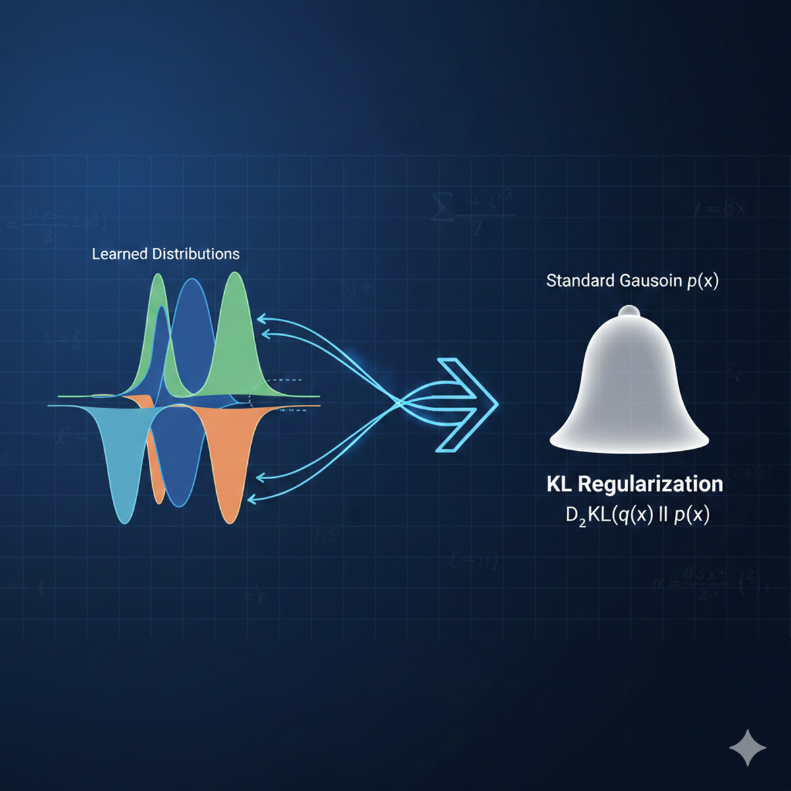
# Reconstruction: how well does output match input?
recon_loss = F.mse_loss(x_reconstructed, x_original)
# KL: how close is encoder output to N(0,1)?
kl_loss = -0.5 * torch.sum(1 + log_var - mu**2 - log_var.exp())
# Total ELBO loss (we minimize, so negate)
loss = recon_loss + beta * kl_lossWhat’s that β (beta) term?
β is a hyperparameter that balances reconstruction vs regularization. Standard VAE uses β=1.
- Higher β: Stronger regularization → more Gaussian latent space → better generation, but possibly blurrier reconstructions
- Lower β: Better reconstruction → but latent space might have gaps → worse generation
This tradeoff is explored in the β-VAE paper. For robotics, you typically tune β based on whether you care more about accurate reproduction or diverse generation.
Chapter 9: From Digits to Robots
This all makes sense for MNIST digits. But how does it apply to robot learning?
Great question! Let’s make the connection explicit. For robot policy learning, we want to learn:
\[P(\text{actions} | \text{observations})\]
This is EXACTLY what a Conditional VAE (CVAE) does! Instead of just generating data, we generate data CONDITIONED on some input.
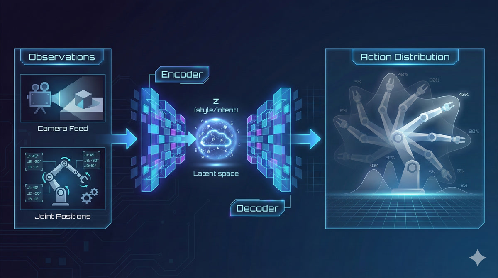
So the observation is like a “prompt” that tells the VAE what kind of output to generate?
Exactly! Here’s how ACT (Action Chunking with Transformers) uses these ideas:
- Observations (camera images, joint angles) go through a vision transformer encoder
- The VAE component captures “style” or “intent” in a latent variable z
- The transformer decoder attends to observations and z to generate a CHUNK of future actions
- The action chunk is executed on your SO-ARM101
The VAE latent captures things like “fold left first vs right first” or “fast vs careful.” Sampling different z values at inference gives you different valid strategies!
| MNIST VAE | Robot Policy (ACT) |
|---|---|
| Input: 28×28 image | Input: Camera images + joint angles |
| Latent: 2D (slant, neatness) | Latent: 64D (style, intent) |
| Output: Reconstructed image | Output: Action sequence (12 joints × 100 steps) |
| Loss: ELBO | Loss: ELBO + action prediction |
So understanding VAEs is essential for understanding ACT?
Absolutely! ACT is built on VAE foundations. The encoder-decoder structure, the latent sampling, the ELBO training - it’s all there. The difference is:
- ACT conditions on observations (CVAE)
- ACT uses transformers instead of MLPs
- ACT outputs action chunks instead of images
But the core insight - learning distributions over outputs using latent variables - is exactly what we covered today. When you look at the ACT paper, you’ll recognize every component!
This is incredible. So the mode-averaging problem we started with - where going left AND right averages to going straight into the obstacle - is solved because…
Because we sample ONE coherent trajectory from the learned distribution! The distribution might have two modes (left and right), but when we sample, we commit to one of them. No averaging, no compromise, no crashing into obstacles.
That’s the power of deep generative modeling for robot learning. Next lesson, we’ll dive into the transformer architecture that makes ACT so powerful for generating coherent action sequences. But the foundation - thinking in distributions, learning with VAEs - that’s what you learned today.
Point estimate policies fail on multimodal behavior - averaging incompatible modes produces invalid actions
Deep generative models learn probability distributions, enabling sampling of coherent outputs
KL divergence measures distance between distributions - essential for training generative models
Latent variables are hidden factors that explain variation - the “secret recipe” for generating data
VAE architecture: Encoder (data → distribution) + Sampling + Decoder (latent → data)
The “variational” trick: Output distributions, not points, to fill latent space and enable generation
ELBO training: Balance reconstruction quality against latent space regularization
For robotics: Conditional VAEs predict P(actions | observations) - exactly what policies need
ACT connection: ACT uses VAE principles with transformer encoder/decoder for action chunk generation
Homework
Run the MNIST VAE notebook: Train a VAE on digits, visualize the latent space, experiment with generation
Study Conditional VAEs: Read this excellent blog post on CVAEs - it’s directly relevant to ACT
Prepare for Transformers: Review attention mechanisms, Q/K/V computation, encoder-decoder architectures - we’ll need these for Lesson 3
Next lesson: We’ll dive into the Transformer architecture that powers ACT’s action sequence generation. The VAE foundation you learned today will make that architecture click into place.